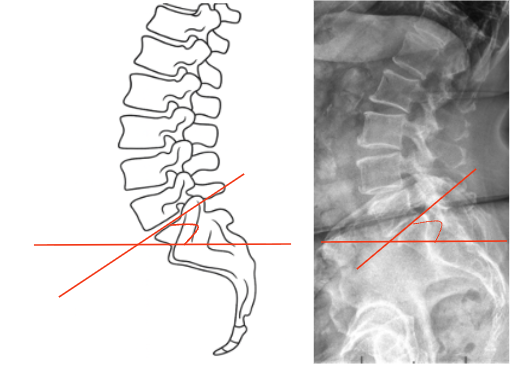

1) Description of Measurement
Sacral Slope (SS) is a fundamental spinopelvic parameter that quantifies the inclination of the sacral endplate relative to the horizontal plane. It reflects the anterior-posterior tilt of the sacrum and directly influences lumbar lordosis and overall sagittal spinal alignment.
A higher sacral slope indicates a more anteriorly inclined sacrum, correlating with greater lumbar lordosis and forward pelvic orientation. Conversely, a lower sacral slope corresponds to posterior pelvic tilt and flattening of lumbar curvature.
Sacral slope, along with pelvic tilt (PT) and pelvic incidence (PI), forms the triad of spinopelvic parameters critical to assessing sagittal balance, surgical planning, and postoperative alignment in both degenerative and deformity contexts.
2) Instructions to Measure
3) Normal vs. Pathologic Ranges
Key Points:
4) Important References
Legaye J, Duval-Beaupère G, Hecquet J, Marty C. Pelvic incidence: a fundamental pelvic parameter for three-dimensional regulation of spinal sagittal curves. Eur Spine J. 1998;7(2):99–103.
Vialle R, Levassor N, Rillardon L, Templier A, Skalli W, Guigui P. Radiographic analysis of the sagittal alignment and balance of the spine in asymptomatic subjects. J Bone Joint Surg Am. 2005;87(2):260–267.
Le Huec JC, Aunoble S, Philippe L, Nicolas P. Pelvic parameters: origin and significance. Eur Spine J. 2011;20(Suppl 5):564–571.
Roussouly P, Gollogly S, Berthonnaud E, Dimnet J. Classification of the normal variation in the sagittal alignment of the human lumbar spine and pelvis. Spine. 2005;30(3):346–353.
Barrey C, Roussouly P, Perrin G, Le Huec JC. Sagittal balance disorders in severe degenerative spine: can we identify the compensatory mechanisms? Eur Spine J. 2011;20(Suppl 5):626–633.
5) Other info....
Sacral Slope (SS) is the most dynamic spinopelvic parameter, varying with posture — unlike Pelvic Incidence (PI), which is fixed anatomically.
SS changes during sitting, standing, and bending as the pelvis tilts anteriorly or posteriorly to maintain sagittal balance.
In surgical planning, restoring an appropriate SS (and thus lumbar lordosis) is essential for achieving harmonious spinopelvic alignment.
SS should always be interpreted in conjunction with PT and PI for a complete assessment:
Restoration targets:
In adult spinal deformity, SS serves as a real-time indicator of compensatory pelvic mechanics during stance.